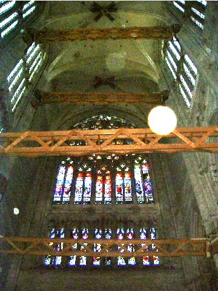

序言
有一段时间了，我一直在酝酿写一本面向程序员的范畴论书籍。请注意，不是面向计算机科学家，而是面向程序员——工程师，而不是科学家。我知道这听起来很疯狂，我也确实感到害怕。我无法否认科学与工程之间存在巨大鸿沟，因为这道鸿沟的两边我都工作过。但我一直都有一种非常强烈的冲动，想把事情解释清楚。我极其敬佩理查德·费曼，他是用简单方式解释事物的大师。我知道自己不是费曼，但我会尽最大努力。我决定先发表这篇序言——它本应激励读者学习范畴论——希望由此开启讨论并征求反馈。你也可以观看我面向现场听众讲授这套内容（或在 YouTube 搜索“bartosz milewski category theory”）。
我会试着在几个段落的篇幅里说服你：这本书就是写给你的；而对于要在你“充裕的业余时间”里学习数学中最抽象的分支之一这件事，无论你心中有什么异议，都是完全站不住脚的。
我的乐观基于几项观察。第一，范畴论是一座蕴藏着极其实用编程思想的宝库。Haskell 程序员很早以前就在开采这项资源，这些思想也正在缓慢渗入其他语言，但这个过程实在太慢了。我们需要让它加速。
第二，数学有许多不同种类，它们吸引的受众也各不相同。你可能对微积分或代数过敏，但这并不意味着你不会喜欢范畴论。我甚至愿意主张，范畴论正是特别适合程序员思维方式的那类数学。因为范畴论不处理个别事物，而是处理结构。它处理的是那种让程序能够复合起来的结构。
复合位于范畴论最根本的位置——它就是范畴定义的一部分。我还会强烈主张，复合是编程的本质。早在某位伟大工程师想出子程序这个点子之前，我们就一直在组合事物。后来，结构化编程原则给编程带来了一场革命，因为它让代码块能够组合。随后出现了面向对象编程，而它所做的一切都围绕着对象的组合。函数式编程不仅组合函数和代数数据结构——它还让并发能够组合——这件事用其他编程范式几乎不可能做到。
第三，我有一件秘密武器：一把屠刀。我会用它把数学切开，让数学对程序员来说更容易入口。当你是一名职业数学家时，你必须非常小心地理清所有假设，恰当地限定每一句陈述，并严格地构造全部证明。这使数学论文和数学书对外行而言极其难读。我受的是物理学训练，而在物理学中，我们曾使用非形式化推理取得惊人的进展。数学家曾嘲笑狄拉克 δ 函数；伟大的物理学家 P. A. M. 狄拉克为了求解一些微分方程，临场创造了这个函数。当数学家发现一个全新的微积分分支——分布理论——能够把狄拉克的洞见形式化时，他们就笑不出来了。
当然，使用这种略过严格细节的直觉论证，会冒着说出明显错误之言的风险。因此，我会努力确保本书的非形式化论证背后都有坚实的数学理论支撑。我的床头确实放着一本已经翻旧的桑德斯·麦克莱恩的《Category Theory for the Working Mathematician》。
既然这是写给程序员的范畴论，我会用计算机代码说明所有主要概念。你大概知道，函数式语言比更流行的命令式语言更接近数学。它们还提供了更强的抽象能力。因此，一个自然而然的诱惑是说：你必须先学会 Haskell，才能获得范畴论的丰厚馈赠。但这样说就意味着范畴论在函数式编程之外没有应用，而这根本不是真的。所以，我会提供大量 C++ 示例。诚然，你必须克服一些丑陋的语法；模式可能不会从冗长啰嗦的背景中凸显出来；在缺少更高层抽象时，你也许会被迫复制粘贴——但这就是 C++ 程序员的命。
不过，说到 Haskell，你也别想就此脱身。你不必成为 Haskell 程序员，但你需要把它当作一种语言，用来勾勒和记录那些准备在 C++ 中实现的思想。我当初正是这样开始学习 Haskell 的。我发现，它简洁的语法和强大的类型系统，对理解并实现 C++ 模板、数据结构和算法有极大帮助。不过，我不能指望读者已经懂得 Haskell，所以我会慢慢引入它，并在推进过程中解释一切。
如果你是一名经验丰富的程序员，可能会问自己：我写了这么多年代码，从没操心过范畴论或函数式方法，那么现在究竟有什么变化？你肯定已经注意到，一股接一股新的函数式特性正在侵入命令式语言。就连面向对象编程的堡垒 Java，也放进了 lambda。C++ 最近则以近乎疯狂的速度演进——每隔几年就推出一项新标准——努力追赶不断变化的世界。所有这些活动，都是在为一次颠覆性变化做准备；或者用我们物理学家的说法，是在为一次相变做准备。如果持续给水加热，它最终会开始沸腾。现在的我们，就像一只必须作出决定的青蛙：是继续在越来越热的水里游，还是开始寻找其他选择。
推动这场巨大变化的力量之一，是多核革命。占主导地位的编程范式——面向对象编程——在并发和并行领域不会给你带来任何好处，反而会鼓励危险而且容易出错的设计。数据隐藏是面向对象的基本前提；但当它与共享和可变性结合起来，就成了制造数据竞争的配方。把互斥锁与它所保护的数据放在一起，这个想法很好；但不幸的是，锁无法组合，而把锁隐藏起来，会让死锁更容易发生，也更难调试。
即使不存在并发，软件系统不断增长的复杂度也正在检验命令式范式的可扩展性极限。简单地说，副作用正在失去控制。诚然，带有副作用的函数往往很方便，也很容易编写。原则上，可以把它们的效应编码进函数名和注释。一个叫作 SetPassword 或 WriteFile 的函数，显然会改变某些状态并产生副作用，而我们也习惯了处理这些事情。只有当我们开始把带有副作用的函数组合在其他带有副作用的函数之上，再继续一层层叠加时，事情才开始变得棘手。并不是副作用本身天然有害——真正的问题是它们被隐藏在视线之外，因而在更大规模上变得无法管理。副作用无法随规模扩展，而命令式编程所围绕的正是副作用。
硬件的变化和软件日益增长的复杂度，正在迫使我们重新思考编程的基础。就像欧洲宏伟哥特式教堂的建造者一样，我们一直在把自己的技艺打磨到材料与结构所能承受的极限。法国博韦有一座尚未完工的哥特式大教堂，见证着人类与自身局限之间这场深刻的斗争。它原本打算打破以往所有高度与轻盈程度的纪录，却经历了一连串坍塌。铁杆和木制支撑一类临时措施阻止了它彻底解体，但显然，许多事情都出了问题。从现代人的视角看，在没有现代材料科学、计算机建模、有限元分析以及一般数学和物理学帮助的情况下，竟然有那么多哥特式建筑成功完工，简直是个奇迹。我希望，后代也会同样赞叹我们在构建复杂操作系统、Web 服务器和互联网基础设施时展现的编程技艺。坦白说，他们确实应该赞叹，因为我们是在极其薄弱的理论基础上完成这一切的。如果还想继续前进，我们就必须修复这些基础。
